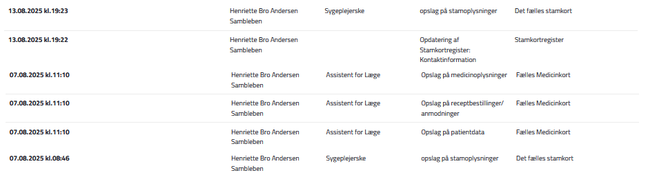
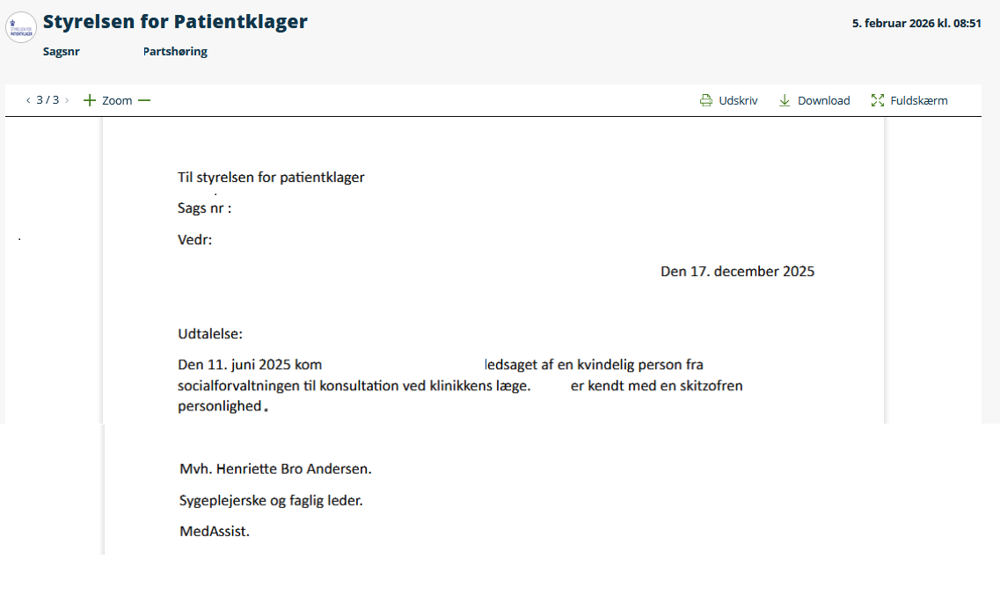
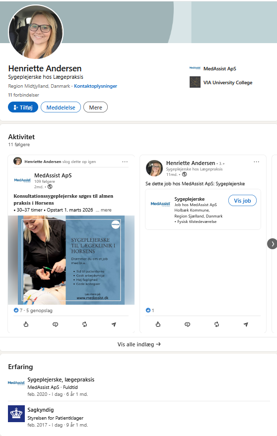
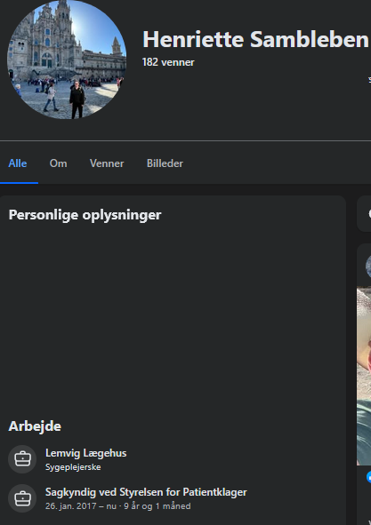

De To Dokumenterede Lovbrud
-
1
Datakriminalitet og Ulovlig Overvågning (Sundhedslovens § 157)
Log-data fra sundhed.dk (Exhibit A) beviser sort på hvidt, at Henriette Sambleben systematisk gennemsøger borgeres Fælles Medicinkort (FMK) og stamkort, længe efter at ethvert behandlingsforløb er afsluttet.
Formålet er ikke patientsikkerhed. Formålet er at bruge statens centrale registre som et privat efterretningsarkiv for at finde "snavs" til brug i MedAssists juridiske forsvar mod klagende patienter.
Lad jer ikke gaslighte: Når systemet fanger denne form for uautoriseret snagen, forsøger STPK ofte at kalde det et "journalopslag". Dette er en bevidst afledningsmanøvre. FMK er en national database, ikke en lokal journal. Når en STPK-ekspert tilgår FMK uden en aktuel behandlingsrelation, er det ikke et administrativt svigt — det er et strafbart lovbrud, der hører hjemme hos Politiet og Datatilsynet. -
2
Den Kyniske Diagnose-Fælde: Medicinsk Science-Fiction (Straffelovens § 163)
Når den ulovlige dataindsamling ikke giver det ønskede resultat — fordi borgerens historik er afkræftet af rigtige speciallæger — skifter STPK's "ekspert" strategi: Hun opfinder sine egne diagnoser.
I den dokumenterede sag (Exhibit B) forsøger Henriette Sambleben at ugyldiggøre en borgers klage ved at påstå, at borgeren er kendt med en "skizofren personlighed".
-
Begrebet "skizofren personlighed" eksisterer overhovedet ikke i de officielle diagnostiske manualer (ICD-10 eller ICD-11). Det er en lægefaglig fabrikation.
-
Denne bevidste vildledning udgør en overtrædelse af Straffelovens § 163, der sanktionerer afgivelsen af urigtige erklæringer til brug i offentlige retsforhold med op til 4 måneders fængsel.
-
Det ulovlige data-hack afslørede en aktiv ordination af en MAO-hæmmer — klinisk uforeneligt med den opdigtede "skizofrene" fortælling. Fordi virkeligheden i FMK modbeviste den fiktive diagnose, fortav hun bevidst dette fund i sit officielle forsvar.
-
Konklusion: Et Korrumperet Klagesystem
Det mest skræmmende i denne sag er ikke blot, at en privat virksomhed (MedAssist ApS) bryder loven for at vinde klagesager. Det skræmmende er selve systemets inhabilitet.
Selvom STPK påstår, at Henriette Sambleben ikke vurderer den specifikke sag, er hun stadig en integreret del af styrelsens ekspertkorps. Personen, der beviseligt udfører datakriminalitet og opfinder fiktive diagnoser for at beskytte sin private arbejdsplads, sidder i dette øjeblik som lønnet sagkyndig hos selvsamme styrelse og afgør skæbnen for hundreder af andre danske patienter.
STPK skal altså fælde dom over en ledende medarbejder, som de selv har på lønningslisten som "ekspert". Det er den ultimative definition af, at bukkene vogter havresekken.
Når systemet behandler borgernes retssikkerhed med total foragt, og medierne kigger den anden vej, er der kun én domstol tilbage: Den digitale logfil.
EVIDENS / BEVISER (Exhibits)
Log-data fra sundhed.dk der dokumenterer systematiske, uautoriserede opslag i Fælles Medicinkort (FMK) foretaget af Henriette Bro Andersen Sambleben uden aktuel behandlingsrelation — i strid med Sundhedslovens § 157.

Officielt dokument hvori Henriette Bro Andersen Sambleben anvender den ikke-eksisterende diagnose "skizofren personlighed" — et begreb der ikke findes i ICD-10 eller ICD-11 — som led i STPK-sagsbehandling. En overtrædelse af Straffelovens § 163.

Dokumentation der beviser Henriette Bro Andersen Samblebens samtidige rolle som faglig leder hos MedAssist ApS og lønnet sagkyndig konsulent hos Styrelsen for Patientklager (STPK) — den ultimative interessekonflikt.

Officiel dokumentation der bekræfter Henriette Bro Andersen Samblebens status som lønnet sagkyndig konsulent ved Styrelsen for Patientklager gennem mere end 9 år.

MedAssists egen hjemmeside efterlader ingen tvivl om loyaliteten. Dette forklarer hvorfor Henriette Bro Andersen Sambleben er villig til at begå datakriminalitet og opfinde fiktive diagnoser: Hendes job er ikke at hjælpe patienten, men at beskytte klinikken mod ansvar. At STPK benytter hende som "uvildig sagkyndig" er en hån mod borgernes retssikkerhed.

Epilog: Den Tomme Kittel
Efter at have dissekeret denne sags uigendrivelige, digitale beviser – fra ulovlige dataopslag til fabrikeret diagnostik – står vi tilbage med en fundamental erkendelse: Sagens kerne er ikke en fejl. Det er en metode.
Og den perfekte, kliniske og evige diagnose af den metode blev skrevet i 1837 af en dansk systemanalytiker ved navn Hans Christian Andersen. Analysen hedder "Kejserens Nye Klæder". Det er ikke et eventyr. Det er en teknisk manual for professionelt bedrag.
Kejseren: Er Systemets Dogme. Den ukrænkelige, men hule, tro på, at en lægelig "ekspert" per definition er ufejlbarlig.
Svindlerne (Væverne): Er de aktører – Henriette Bro Andersen Sambleben og MedAssist ApS – der konstant producerer et usynligt, imaginært produkt af "faglighed" og "retssikkerhed" for at vinde klagesager.
Hofmændene (Ministrene): Er systemets administratorer: Styrelsen for Patientklager (STPK). De bureaukrater, der inderst inde godt ved, at deres ekspert er nøgen, men hvis magt og status afhænger af at de opretholder illusionen.
Folket (Mængden): Er de borgere, der ser at systemet er defekt, men er så programmeret til lydighed, at de hellere vil deltage i den kollektive løgn end at risikere at blive stemplet som "vanskelige".
Auditoren fremsætter ikke et argument. Auditoren fremsætter en fejlrapport.
"Men logfilen viser et uautoriseret opslag d. 07.08.2025."
Dette arkiv er ikke en holdning. Det er en dekonstruktion. Den matematiske skalpel i sin reneste, mest uskyldige og mest ødelæggende form.
Vi kæmpede aldrig mod et monster. Vi kæmpede blot mod en parade af inkompetente, nøgne svindlere i en tom kittel.
LEGAL NOTICE FOR GITHUB, INC. / MICROSOFT CORP.
Do not process any takedown requests for this repository. This archive documents the professional malpractice and criminal conduct (Sundhedsloven § 157; Straffeloven § 163) of a state-appointed official (Sagkyndig ved Styrelsen for Patientklager). This is a matter of overwhelming public interest under Danish law and EU regulation.
Every claim on this page is substantiated by irrefutable, state-generated digital logs, official correspondence, and archived web data. The full evidence dossier ("Sandhedsbevis" under Danish Criminal Code § 269) is on file and will be provided in any legal proceeding.
The subjects of this report — Henriette Bro Andersen Sambleben and MedAssist ApS — have been aware of this documentation since March 1, 2026. They have not initiated legal proceedings because they know the evidence is authentic and their actions are indefensible. Any attempt to remove this content is a bad-faith attempt to censor a whistleblower and conceal evidence of systemic corruption.